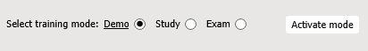
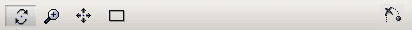

3D-Trainingsanwendung – Benutzeroberfläche
Mit dieser 3D-Trainingsanwendung können Sie den Trainingsvorgang lernen. Die Trainingsanwendung besitzt drei verschiedene Modi:
- Demo-Modus – Automatisches Abspielen des Vorgangs. Sie können die gewünschten Schritte mehrmals in unterschiedlichen Geschwindigkeiten abspielen und den Vorgang aus verschiedenen Blickwinkeln untersuchen.
- Lernmodus – Eine interaktive Wiedergabe des Vorgangs. Sie können den Vorgang mithilfe verschiedener Hinweise ausführen.
- Prüfmodus – Prüfen Sie Ihr Wissen. Der Vorgang muss ohne Hinweise ausgeführt werden.
Schulungsumgebung
Im unteren Fenster können Sie den gewünschten Trainingsmodus auswählen und aktivieren:

Im Demo- und im Prüfmodus können Sie die Wiedergabe des Vorgangs über eine Steuertafel steuern:

- Schritt abspielen startet (bzw. beendet) die Wiedergabe des Vorgangs.
- Schritt zurücksetzen beendet den aktuellen Schritt und springt wieder zum Anfang.
- Vorheriger Schritt bewegt die Wiedergabe zum vorherigen Schritt zurück.
- Nächster Schritt bewegt die Wiedergabe zum nächsten Schritt.
- Modus deaktivieren deaktiviert den aktuellen Modus.

- Position ermöglicht das Bewegen der Kamera an den gewünschten Bereich des 3D-Modells.
Das Vorgangsfenster stellt den erwarteten Vorgang oder eine Gruppe aus Vorgängen dar. Lesen Sie die Anweisungen und führen Sie die Aktionen durch, z. B. das Eingeben des erforderlichen Parameters, oder wählen Sie das Objekt aus, das zu einem Vorgang gehört:

Das obere Fenster hilft Ihnen dabei, den Vorgang abzuschließen:

- Dokument. Zeigt den Teil des Dokuments an, der zum aktuell aktiven Vorgangsschritt gehört.
- Anweisungen. Zeigt Kommentare an, die mit dem aktuellen Trainingsschritt verknüpft sind.
- Teile. Zeigt die Liste der inaktiven Objekte im aktuellen Training an. Ermöglicht es Ihnen, Positionen von Objekten zu finden und zusätzliche Meta-Informationen anzuzeigen.
- Parameter. Zeigt eine Liste der Parameter an, die im aktuellen Training verwendet werden. Diese Parameter werden als bedingte Sprünge im Trainingsszenario verwendet. Sie können aufgefordert werden, einen solchen Parameter einzugeben.
Trainingsmodi
Demo-Modus
- Um in diesen Modus zu wechseln, wählen Sie den Demo-Modus aus und klicken Sie anschließend auf Modus aktivieren.
- Um die Wiedergabe zu starten, klicken Sie auf Schritt abspielen. Die Beschreibung des derzeit aktiven Schritts wird auf der Registerkarte "Dokument" angezeigt.
- Der Vorgang wird kontinuierlich angezeigt.
- Um die Wiedergabe zu unterbrechen, klicken Sie auf Pausieren. Klicken Sie auf Abspielen, um die Wiedergabe fortzusetzen.
- Um die Beschreibung des gesamten Vorgangs anzuzeigen, klicken Sie auf Dokument.
- Sie können im 3D-Fenster navigieren (siehe den Abschnitt "Navigation im 3D-Fenster" in diesem Dokument).
- Die Registerkarte "Teile" ermöglicht es Ihnen, das gewünschte Teil im 3D-Fenster hervorzuheben (klicken Sie auf "Suchen") und zusätzliche Informationen anzuzeigen (klicken Sie auf "Meta").
- Um zum nächsten oder vorherigen Schritt des Vorgangs zu wechseln, klicken Sie auf Nächster Schritt oder Vorheriger Schritt.
- Um den Demo-Modus zu beenden, klicken Sie auf Modus deaktivieren.
Lernmodus
- Um in diesen Modus zu wechseln, wählen Sie den Lernmodus aus und klicken Sie anschließend auf Modus aktivieren.
- Klicken Sie auf Schritt abspielen, um mit dem Lernen des Vorgangs zu beginnen. Befolgen Sie die Anweisungen im Fenster "Operation". Es gibt drei Gruppen von Anweisungen:
- Finden Sie die Teile, die im aktuellen Vorgangsschritt involviert sind, und klicken Sie dann im 3D-Fenster oder auf der Registerkarte "Teile" darauf.
- Wählen Sie die richtige Antwort aus der Liste "Optionen" aus.
- Geben Sie einen Wert für einen Parameter ein.
- Mit der Schaltfläche Überspringen können Sie zum nächsten Vorgang im Trainingsszenario springen.
- Das Testergebnis stellt die gemachten Fehler visuell dar (grün = richtig, rot = falsch). Die Fehlerstufe wird in der 3D-Simulation festgelegt und erhöht sich schrittweise für den aktuellen Schritt. Jeder neue Schritt beginnt mit 0 Fehlern.
- Schließen Sie alle Schritte ab und klicken Sie auf Modus deaktivieren, wenn Sie den Lernmodus beenden möchten.
Prüfmodus
- Um in diesen Modus zu wechseln, wählen Sie den Prüfmodus aus und klicken Sie anschließend auf Modus aktivieren.
- Klicken Sie auf Start, um mit dem Test zu beginnen. Hier sollten Sie die Aktionen genauso ausführen wie im Lernmodus, es stehen jedoch keine Hinweise mehr zur Verfügung.
- Um den Prüfmodus zu beenden, klicken Sie auf Modus deaktivieren.
Navigation im 3D-Fenster
Sie können im 3D-Fenster mithilfe der Maus oder der Navigationsleiste navigieren:

Zum Vergrößern/Verkleinern des 3D-Modells:
- Verwenden Sie das Mausrad.
- Klicken Sie alternativ auf "Zoomen"
 auf der Navigationsleiste, positionieren Sie den Mauszeiger an einer beliebigen Stelle im 3D-Fenster, halten Sie die linke Maustaste gedrückt und bewegen Sie die Maus.
auf der Navigationsleiste, positionieren Sie den Mauszeiger an einer beliebigen Stelle im 3D-Fenster, halten Sie die linke Maustaste gedrückt und bewegen Sie die Maus.
Zum Bewegen der Kamera nach unten/oben oder links/rechts:
- Positionieren Sie den Mauszeiger an einer beliebigen Stelle im 3D-Fenster, dann bewegen Sie die Maus und halten Sie dabei die mittlere Taste (bzw. das Mausrad) gedrückt.
- Klicken Sie alternativ auf "Verschieben"
 auf der Navigationsleiste, positionieren Sie den Zeiger im 3D-Fenster, halten Sie die linke Maustaste gedrückt und bewegen Sie die Maus.
auf der Navigationsleiste, positionieren Sie den Zeiger im 3D-Fenster, halten Sie die linke Maustaste gedrückt und bewegen Sie die Maus.
Um das gesamte 3D-Modell im 3D-Fenster komplett sichtbar zu machen
- Klicken Sie in der Navigationsleiste auf "Einpassen"
 .
.
Um das 3D-Modell zu drehen:
- Klicken Sie auf "Drehen"
 auf der Navigationsleiste, positionieren Sie den Mauszeiger über dem 3D-Modell, halten Sie die linke Maustaste gedrückt und bewegen Sie die Maus.
auf der Navigationsleiste, positionieren Sie den Mauszeiger über dem 3D-Modell, halten Sie die linke Maustaste gedrückt und bewegen Sie die Maus.
Um das Rotationszentrum des 3D-Modells festzulegen:
- Halten Sie die ALT-Taste gedrückt und klicken Sie auf eine Geometrie im 3D-Fenster.
- Positionieren Sie alternativ den Mauszeiger über einer beliebigen Geometrie im 3D-Fenster und drücken Sie die mittlere Maustaste (oder das Mausrad).
Um zum nächsten Vorgangsschritt (Animation) zu wechseln:
- Klicken Sie auf "Aktuelle Animation überspringen" .
Einstellungen
- Geschwindigkeit. Legt die Wiedergabegeschwindigkeit für den 3D-Vorgang fest.
- Ansichtspunkt einfrieren. Wenn diese Option ausgewählt ist, wird die aktuelle Position des Viewers für die Wiedergabe verwendet.
- Warnmeldungen deaktivieren. Wenn diese Option ausgewählt ist, wird die Ausgabe von Warnmeldungen blockiert.
- Besondere Hervorhebung von Teilen in DEMO- und LERNMODUS aktivieren. Wenn diese Option ausgewählt ist (Standardwert), wird eine halb durchsichtige blinkende Kugel oberhalb des ausgewählten 3D-Objekts angezeigt, um die Aufmerksamkeit des Lernenden zu wecken.
- Fortlaufende Wiedergabe im Demomodus. Wenn diese Option ausgewählt ist (Standardwert), ist die unterbrechungsfreie Wiedergabe des Trainingsvorgangs möglich. Wenn deaktiviert, wird die Wiedergabe nach jedem Schritt gestoppt.
- Direkte Hinweise im Lernmodus aktivieren. Zeigt im Vorgangsbereich die Informationen über die Aktionen des Schulungsteilnehmers an, die durchgeführt werden sollten, oder blendet sie aus. Wenn Sie direkte Hinweise ermöglichen, können Sie das Teil mithilfe der Schaltfläche zum Suchen des Teils (sie trägt den Namen des erforderlichen Teils) finden. Darüber hinaus werden bei Aktivierung direkter Hinweise die richtigen Antworten in der Auswahlliste angezeigt.
- Navigationswürfel anzeigen. Blendet den Navigationswürfel im 3D-Fenster ein oder aus. Der Navigations-Würfel verfügt über drei verschiedene Typen von Hotspot-Bereichen: Kante, Ecke und Fläche. Wenn Sie den Mauszeiger auf die Kante, Ecke oder Fläche des Navigations-Würfels positionieren, wird der entsprechende Bereich hervorgehoben. Mit diesen Bereichen können Sie zwischen Standardansichten umschalten und Drehungen vornehmen.
- Oberflächenkanten anzeigen. Wenn diese Option ausgewählt ist, wird die Anzeige von Oberflächengrenzen im 3D-Fenster aktiviert.
- Anti-Aliasing. Aktiviert eine Technik zur Minimierung der Verwindungsartefakte im 3D-Fenster.
- Umgebungsverdeckung. Aktiviert die Schattierungs- und Darstellungsmethode für die Umgebungsverdeckung im 3D-Fenster.
- Umriss für schwebende Objekte. Die Auswahl wird umrissen.